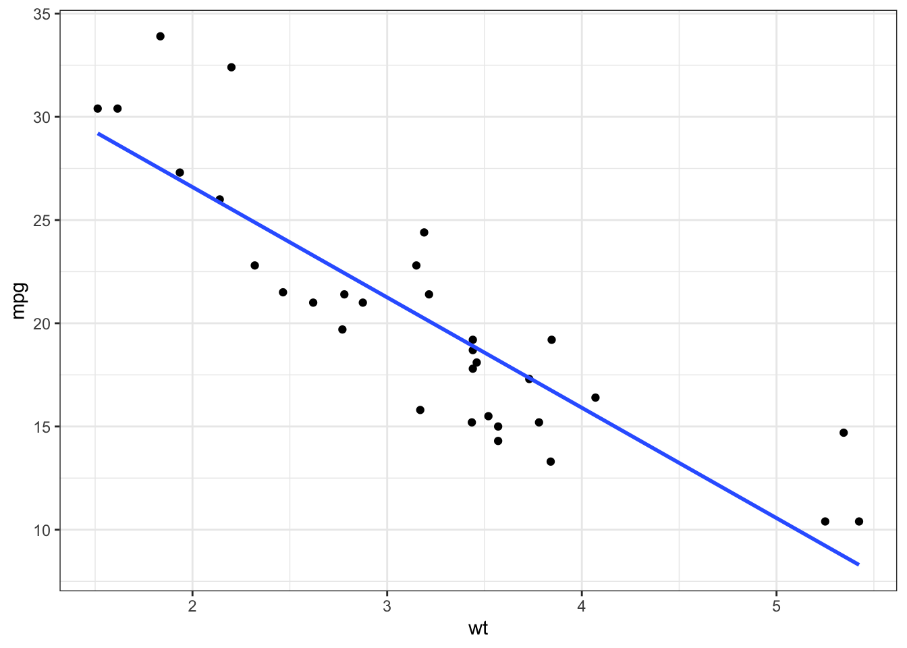
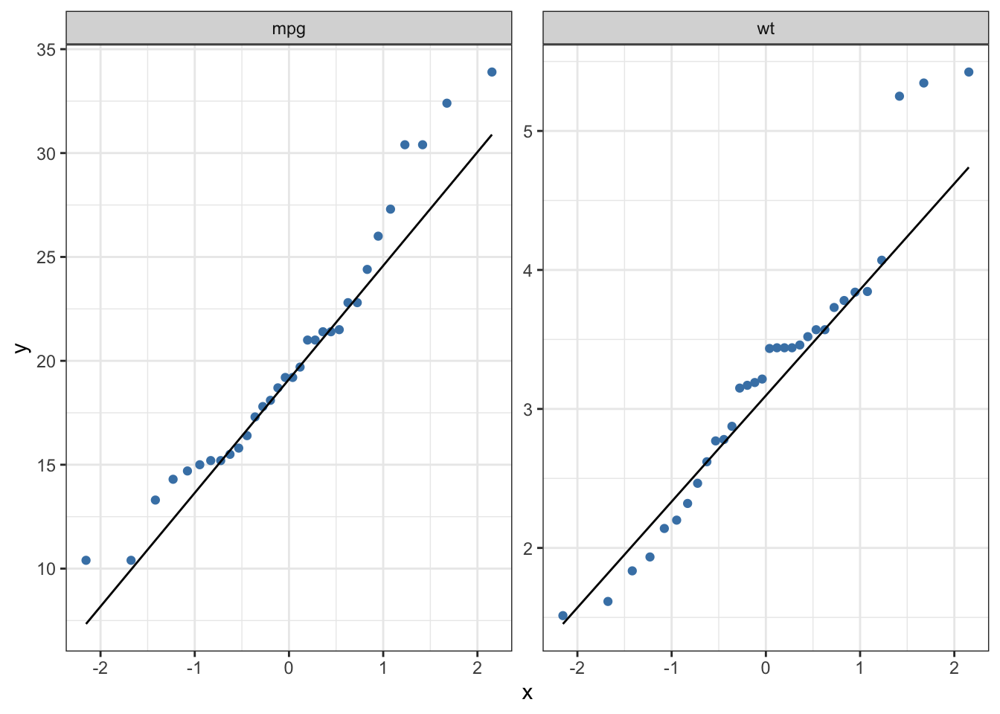
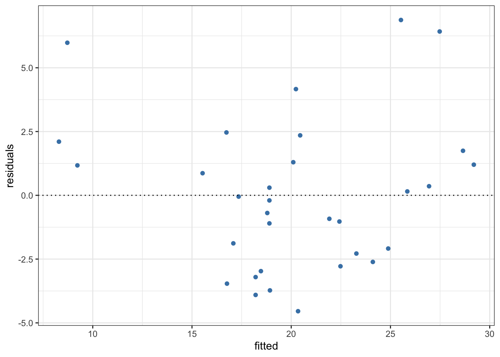

In previous posts, I discussed visualizing the relationship between two quantitative variables through a scatter plot and quantifying the strength of the relationship through different types of correlation.
A scatter plot uses dots to represent the values of two numeric variables. If the dots move from the lower-left to the upper-right corner of the plot, it depicts a positive correlation; if the dots move from upper-left to lower-right corner, it illustrates a negative correlation; if the dots do not form any pattern, it shows no relationship between the two variables.
The correlation coefficient quantifies the extent of interrelation between two numeric variables. The higher the correlation coefficient in absolute value, the stronger the degree of association.
Correlation shows whether or not a change in one variable is
followed by changes in another variable, or vice versa, without
making any distinction between dependent or independent
variables. The linear regression predicts the numeric response
in the dependent variable that is triggered based on the changes
in the independent variable(s). In other words, the correlation
between x and y is identical to the
correlation between y and x. While
regressions of y on x and
x on y yield completely different
results.
There are two main types of linear regression: 1) Simple linear regression that predicts the value of the dependent variable on the basis of one explanatory variable and 2) Multiple linear regression that predicts the value of the dependent variable on the basis of two or more than two explanatory variables.
For this analysis, I use the mtcars dataset
to build a simple linear model for mpg (miles a car
travels per gallon of gasoline) as a function of wt
(weight of a car), so you can use it to predict how many miles a
car travels when the weight is known.
Mathematically, the regression equation is expressed as below:
\[y = \beta0+\beta1 \space x + e\]
Where \(\beta0\) and \(\beta1\) are regression
coefficients and \(e\) is the
error term. The lm() function is used to estimate
the coefficients of linear regression:
##
## Call:
## lm(formula = mpg ~ wt, data = mtcars)
##
## Coefficients:
## (Intercept) wt
## 37.285 -5.344Since the coefficient for wt is negative, it
denotes a negative relationship between mpg and
wt. That is, a unit increase in wt is
followed by 5.344 units decrease in mpg.
Before using the model for predictions, we should make sure
the model is statistically significant. The
summary() function displays the significance level
of each coefficient alongside other useful information such as
residuals and R-squared to test the model accuracy.
##
## Call:
## lm(formula = mpg ~ wt, data = mtcars)
##
## Residuals:
## Min 1Q Median 3Q Max
## -4.5432 -2.3647 -0.1252 1.4096 6.8727
##
## Coefficients:
## Estimate Std. Error t value Pr(>|t|)
## (Intercept) 37.2851 1.8776 19.858 < 2e-16 ***
## wt -5.3445 0.5591 -9.559 1.29e-10 ***
## ---
## Signif. codes: 0 '***' 0.001 '**' 0.01 '*' 0.05 '.' 0.1 ' ' 1
##
## Residual standard error: 3.046 on 30 degrees of freedom
## Multiple R-squared: 0.7528, Adjusted R-squared: 0.7446
## F-statistic: 91.38 on 1 and 30 DF, p-value: 1.294e-10It displays the model equation
lm(formula = mpg ~ wt, data = mtcars) followed by a
glimpse of the distribution of the residuals.
The Coefficients part shows the estimates and their attributes such as standard error, t value, and p-value for each beta coefficient to assess the extent and the significance level of numeric response in the dependent variable based on the changes of the independent variable(s).
Estimates: The y-intercept and the estimated effect of the explanatory variable(s) on the dependent variable are displayed in this part. (The closer to zero, the weaker its effect on the outcome)
Std. Error: It indicates how precisely the estimates are measured by quantifying the uncertainty of the estimates. It can be used to calculate the confidence interval and t-value as well. (The lower the standard error, the better the estimates)
t-value: It is the ratio of the beta coefficient and standard error \(t = \frac {\beta}{Std. \space Error}\). A higher standard error, therefore, yields a lower t-value. (The higher t-value is better)
Pr(>|t|): It shows the significance level of the coefficient, and tests whether or not it is significantly different from zero. (The closer to zero is better)
The summary() function also provides additional
information such as RSE, R-squared, and the p-value to test how
well the model fits the data.
Residual standard error (RSE): It shows
the average variation of the observed values from the predicted
values. For example, the RSE is 3.046 in the above model that
indicates the observed values of the dependent variable deviate
from the regression line, on average, by 3.046 units. The ratio
of RSE and mean of the dependent variable results in a
percentage error. In the above model the percentage error is
3.046*100/mean(mtcars$mpg) = 15.2%. (The lower
RSE is better)
R-squared: It indicates the proportion of variance of the dependent variable that can be explained by the explanatory variable(s) which ranges from 0 to 11. (The closer to one is better)
p-value: It shows the overall significance level of the model. (The closer to zero is better)
library(tidyverse)
ggplot(mtcars, aes(x = wt, y = mpg)) +
geom_point() +
geom_smooth(method = "lm", se = F) +
theme_bw()
The above graph depicts a linearly decreasing relationship
between mpg and wt.
If the vast majority of points are very near the line, it depicts a normal distribution. If the data do not follow a normal distribution, you can use the methods described here to transform the data into a normal distribution.
mtcars %>%
select(mpg, wt) %>%
pivot_longer(names_to = "vars", values_to = "values", cols = everything()) %>%
ggplot(aes(sample = values)) +
geom_qq(color = "steelblue") +
geom_qq_line() +
facet_wrap(~vars, scales = "free") +
theme_bw()
The above graphs illustrate that mpg and
wt are moderately skewed to the right side.
Multicollinearity: Multicollinearity indicates the presence of a strong correlation among independent variables. You should check this assumption while using multiple linear regression. Since there is only one explanatory variable in our model, we can skip this assumption.
Homoscedasticity: It stands for homogeneity of variance of residuals. We can test this assumption by plotting the fitted values against the residuals.
If the points form any systematic pattern, it depicts the violation of homoscedasticity.
# The residuals and fitted values can also be obtained if you feed the linear regression model into `augment()` function from the **broom** package.
data.frame(
fitted = fitted(lm(mpg~wt, mtcars)),
residuals = resid(lm(mpg~wt, mtcars))
) %>%
ggplot(aes(x = fitted, y = residuals)) +
geom_point(color = "steelblue") +
geom_hline(yintercept = 0, linetype = "dotted") +
theme_bw()
After determining that the data do not violate any of the above assumptions, you can proceed to make predictions based on new values of the explanatory variable(s).
As mentioned earlier, if the dependent and independent variables are denoted by \(y\) and \(x\), the regression line of \(y\) on \(x\) is expressed as follow: \[y = \beta 0 + \beta 1\space x\]
where \(\beta 0\) and \(\beta 1\) are unknown parameters that can be estimated using the sample data. \(\beta 0\) indicates the y-intercept and \(\beta 1\) shows the slope of the regression line, respectively. That is, \(\beta 0\) represents the value of \(y\) when \(x\) is 0 and \(\beta 1\) indicates the estimated effect of \(x\) on \(y\).
Making predictions with linear regression is as simple as solving the above equation. For instance, consider the model we built earlier: \[mpg = 37.285 - 5.344 × wt\]
You can enter different values for the explanatory variable
in the above equation to predict the dependent variable. For
example, let’s predict the value of mpg if
wt is 5: \[mpg = 37.285
- 5.344 × 5 = 10.565\]
Nevertheless, if you have multiple explanatory variables,
solving the the above equation by hand would be time-consuming.
Instead, you can use the predict.lm() function for
the predictions based on the linear model.
## 1
## 10.56277The R-squared in a linear regression with one independent variable is the square of the Pearson correlation coefficient.↩︎